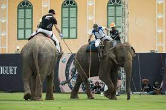

El juego comienza cuando el árbitro lanza la pelota a los 2 elefantes que se encuentran dentro del campo y fuera del círculo central. Ningún otro elefante puede entrar en al campo hasta que la pelota haya sido golpeada por cualquiera de los 2 jugadores que se encuentran dentro y hacerlo es considerado una falta. El resto de elefantes deben estar al menos a 15metros de la pelota.
Debe haber siempre al menos un elefante en cada mitad durante todo el tiempo del partido. Ningún equipo con 4 elefantes debe tener más de 3 elefantes en la mitad del campo de juego en cualquier momento, incluso durante el lanzamiento antes del inicio del juego y en el tiro después de cada gol, de hacerlo será una falta. Del mismo modo, los equipos de 3 elefantes nunca deben tener más de 2 elefantes jugando en un momento dado.
No debe haber más de 1 elefante en cada lado de la D al mismo tiempo. Si el equipo ofensivo tiene más de 1 elefante en el semicírculo, incluso aunque sea una pequeña parte del pie del elefante durante un segundo, el equipo defensor tendrá 1 punto libre para lanzar la bola desde algún punto en la línea de semicírculo opuesto.
No habrá restricciones en cuanto al peso, la altura o el sexo de los elefantes.
Cada equipo debe constar de 4 elefantes, los cuales se marcarán y clasificarán como A, B, C, D y así sucesivamente.
Ningún elefante puede acostarse frente a la zona de gol, y hacerlo será una falta, por lo que se le concederá un tiro libre al equipo contrario.
Haga click en cada deporte para poder ver de donde es sacada la información:
-Carrera de avestruz-----------Polo en elefantes-----------Chess-boxing-----------Ciclobol